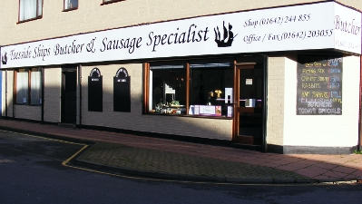

Brief Company History
Teesside Ship Supplies was established in 1968 as a Ship's Chandler (supplier); Over time the shipping industry slowed and Teesside Ship Supplies decided it was time to specialise in one aspect of their business; butchery. So it was that, in the late 1970's, the once Ship's Chandler began a new journey and became a family butcher in the heart of Middlesbrough.
After successfully running the business for many years, previous owners decided to sell the family butcher in 2006. Teesside Ships remained in the family and came under the ownership of Yvette McDonald.
With new management came new ideas and foreign influences that Mrs McDonald was eager to integrate into the butcher’s line of handmade sausage. Mick and Ian being such fabulous butchers were happy to introduce new flavours from continental European cuisine, such as Chorizo, Chipolata, Toulouse, Merguez and Bratwurst Sausage.
With world travel being what it is today and the demand for foreign foods and flavours such as Boerewors and Chakalaka sausage, the South African part of the shop was launched in July 2014. Teesside Ships now make Dry Wors, biltong and chilli bites. The Boerewors now includes garlic and peri-peri as well as traditional and the famous Chakalaka. You have to try it to know that it is the best. The shop has now been extended to cater for the grocery side of the South African shop as well as great English spices and sauces. Hope to see you there soon.
